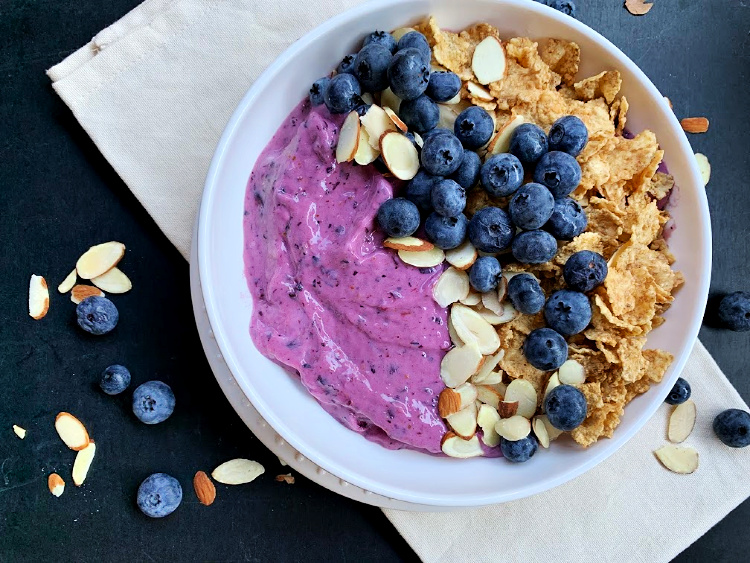

Almond Berry Smoothie Bowl

Description
Almond milk and almond butter are the star ingredients in this berry smoothie for a
nutritious, on-the-go meal that is vegan and paleo-friendly.
- 1 cup frozen blueberries
- 1 banana
- 1/2 cup almond milk
- 1 tablespoon almond butter
- water as needed
Directions
- Combine blueberries, banana, almond milk, and almond butter in the blender
- Blend until smooth, adding water for thinner smoothie.
Back to Home Page